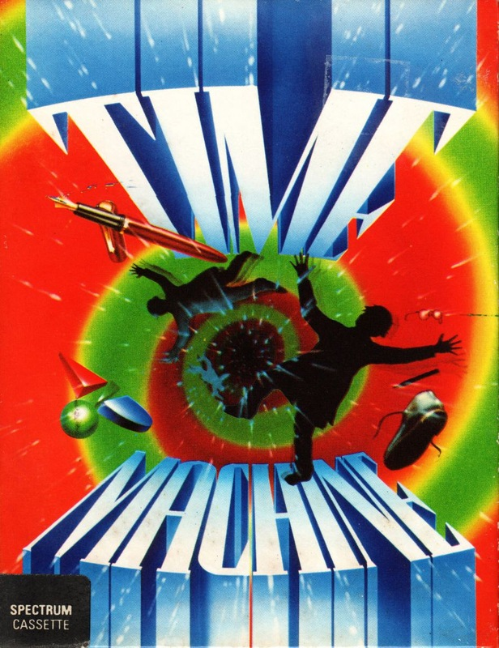
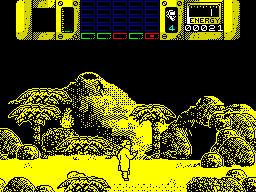

Time Machine


{kind=link}

| Publisher: | Activision |
| Price: | £9.99 |
| Year: | 1990 |
| Source: | CRASH, Issue 80 |

Professor Potts is your archetypal mad scientist: a tall, awkward, gangly man who has a shock of untidy hair and wears a lab coat. He also owns a time machine. It’s not very pretty but it serves its purpose, or rather it did until a bunch of terrorists tried to blow it up. Fortunately they didn’t succeed, but unfortunately the bomb hit a vital accelerator crystal and threw the Prof into the past.
With five time zones to travel through, the ultimate aim is to traverse the ages and return to present day (ie: ten million years in the future) and get to the time machine before the terrorists do (confused yet?). To complete each time zone the Prof has to perform a special task. In zone one, one of the problems is to protect man’s ancestors from the elements by rounding them up, keeping them in a cave and lighting a fire. How else are they to survive the Ice Age?! Remember though, your actions in one time zone can affect the future of the human race — evolution is in your hands.

On the status panel is a block made up of 25 rectangles — representing a map of the five time zones with five screens in each. When everything is okay the map is green, when trouble brews the affected block turns red, when this happens leg it to the relevant screen pronto. With five zones to patrol the Prof’s legs soon get tired, but fear not: four travel pods allow Prof Potts to zip around righting wrongs and generally making sure that mankind’s future is safe.
Besides natural obstacles, the occupants of each time zone try to kill you. All you have for protection is a controller device, it stuns attackers and thus allows you to escape. And escape you must if you are to return home!
Programmed by Raff ‘Cybernoid’ Cecco, Time Machine is the bees knees (and other parts perhaps) of arcade adventures. The puzzle element is pitched at just the right level (mildly frustrating), so sit and think about a problem, don’t just hurl yourself out the nearest window. Graphically it’s a winner too, with sound just as good with a title tune and spot effects. In short, if you want an ace arcade puzzle game look no further than this.
MARK — 91%
This time travel lark has been popular for a long time, Marty and Doc Brown in Back To The Future and Doctor Who managed to travel through time and space with ease, so why not Prof Potts? The first level is difficult enough, but when you move to other time zones and discover that your actions in previous levels may affect later developments it’s straight jackets ahoy time! But the game is very good indeed, so your Speccy isn’t in too much danger of being smashed to pieces. All the sprites are big with lots of animation and potts (ho, ho) of colour. Time Machine is one of the best arcade/strategy games around.
NICK — 90%
RATING
Refreshingly different: a colourful action game with plenty of brain-blending puzzles
| PRESENTATION: | 92% |
| GRAPHICS: | 90% |
| SOUND: | 80% |
| PLAYABILITY: | 89% |
| ADDICTIVITY: | 90% |
| OVERALL: | 91% |